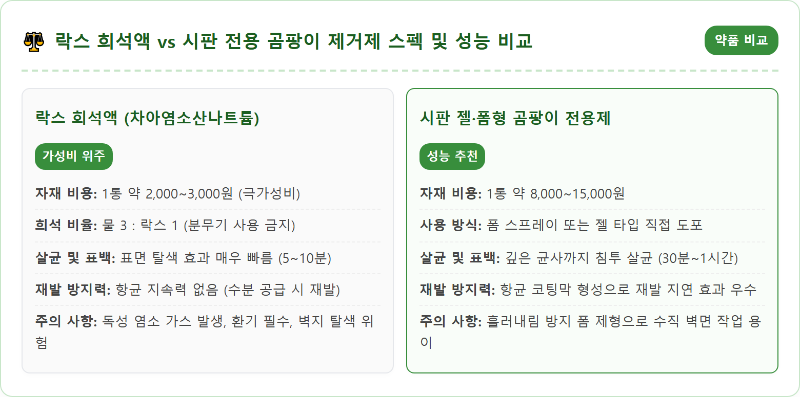
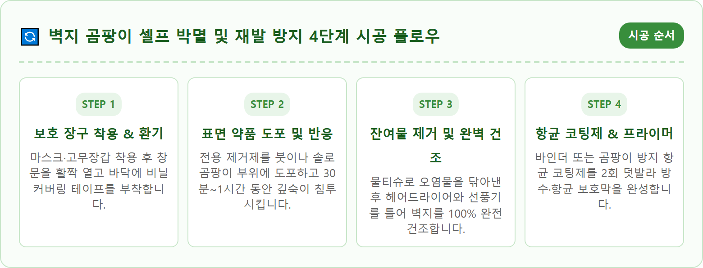
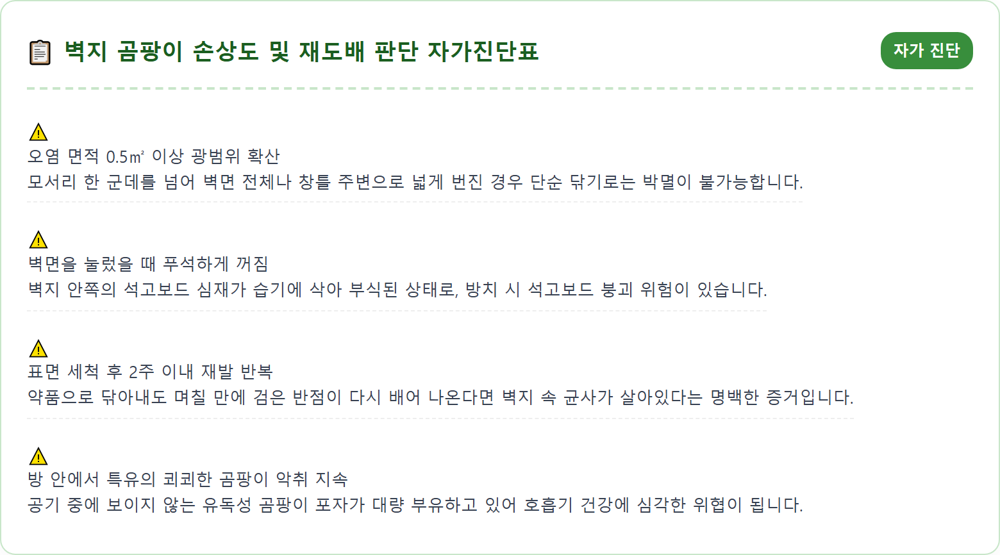
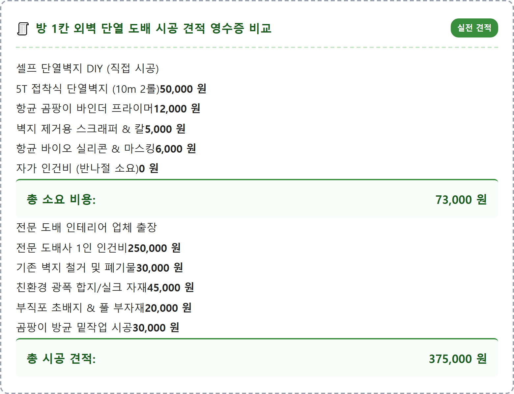
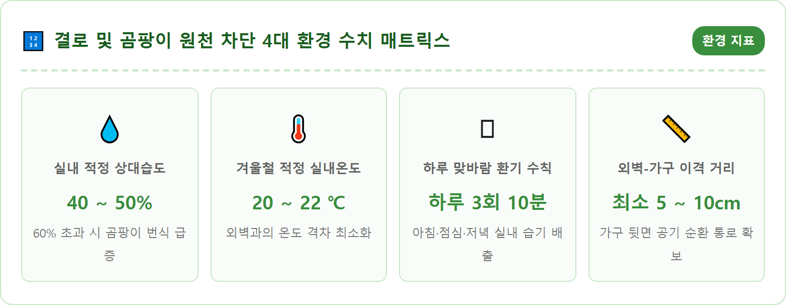
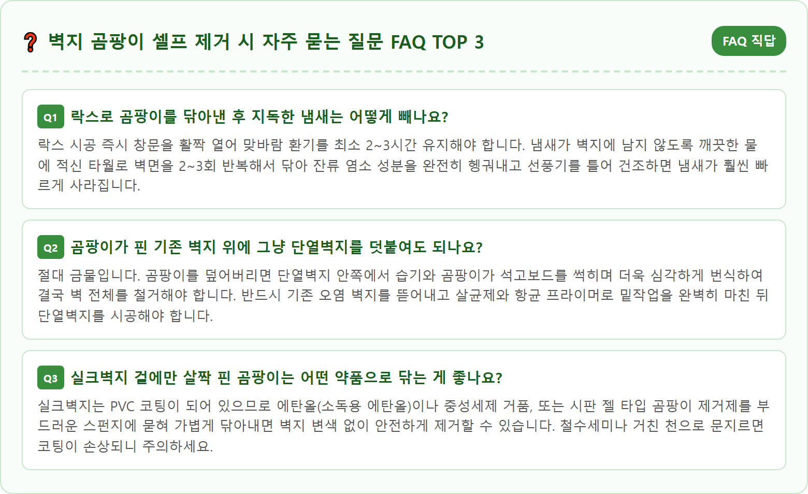

A realistic interior DIY home improvement scene showing an adult wearing yellow protective rubber gloves and a white protective mask carefully treating a localized patch of dark mold on an apartment room wallpapered corner. In one hand, holding a professional mold removal spray bottle, while a clean microfiber cloth and soft sponge rest on a protective plastic floor sheet nearby. The room is brightly lit with natural daylight streaming through a partially opened window. Clean, organized, safe DIY environment with step-by-step home maintenance concept. Ultra-realistic photography, 8k resolution, crisp textures, natural focus, authentic home repair atmosphere.

아침저녁으로 기온이 급격히 떨어지는 늦가을 환절기부터 한겨울에 이르기까지, 많은 가정에서 가장 골머리를 앓는 주거 문제 중 하나가 바로 방 모서리와 창가 벽지에 피어오르는 검붉은 곰팡이입니다. 벽지에 곰팡이가 피어나는 것은 단순히 청결하지 못해서가 아니라, 건축 구조적인 '외벽 단열 부실'과 실내 '습도 관리 실패'가 맞물려 발생하는 '결로(Condensation) 현상'이 근본 원인입니다.
실내 따뜻한 공기 중에 포함된 수증기는 단열재가 취약한 차가운 외벽 모서리나 창틀 주변 벽 표면에 닿는 순간 급격히 식어 물방울(이슬)로 맺히게 됩니다. 이 표면 결로가 지속되면 벽지가 축축하게 젖어 들고, 20~30℃의 실내 온도와 유기물(벽지의 풀, 종이 섬유)이 결합하면서 공기 중에 떠돌던 곰팡이 포자가 폭발적으로 번식하기 시작합니다.
특히 아파트의 북향 방이나 복도식 아파트의 현관 쪽 방, 빌라의 최상층 모서리는 외부 냉기에 직접 노출되는 열교(Thermal Bridge) 현상이 심해 결로가 집중됩니다. 벽지 곰팡이는 미관을 해칠 뿐만 아니라, 번식 과정에서 공기 중으로 수억 개의 미세 포자와 독성 물질(마이코톡신)을 방출하여 비염, 천식, 아토피 피부염 등 만성 호흡기 질환과 알레르기를 유발하므로 발견 즉시 근본적인 해결에 나서야 합니다.
벽지에 곰팡이가 발생했을 때 가장 대중적으로 활용되는 두 가지 제거 방식은 가정용 락스를 물에 희석해 바르는 방법과, 시중에서 판매하는 곰팡이 전용 제거제를 구입해 시공하는 방법입니다. 두 방식은 비용과 효과, 시공 편의성 면에서 뚜렷한 장단점을 지니고 있습니다.
가정용 락스의 주성분인 차아염소산나트륨(NaOCl)은 강력한 산화 작용을 통해 곰팡이의 세포벽을 즉각 파괴하고 검은 색소를 빠르게 표백시키는 강력한 탈색력을 자랑합니다. 한 병에 2~3천 원에 불과하여 비용 부담이 거의 없다는 것이 최대 장점입니다. 하지만 락스는 유기물과 반응할 때 자극적인 염소 가스를 배출하여 호흡기와 눈 점막에 심한 자극을 주며, 분무기로 분사할 경우 미세 에어로졸이 폐 깊숙이 침투할 수 있어 절대 분무기를 사용해서는 안 됩니다. 또한 락스는 수분 함량이 높아 시공 후 완벽하게 말리지 않으면 오히려 잔류 수분이 곰팡이 재발의 씨앗이 될 수 있습니다.
반면 시판 곰팡이 전용 제거제는 거품(폼) 형태나 젤 형태로 출시되어 수직 벽면에 뿌려도 아래로 흘러내리지 않고 오랫동안 표면에 밀착되어 곰팡이 뿌리(균사)까지 침투합니다. 락스 특유의 역한 냄새를 저감시킨 마일드 제품이 많고, 살균 후 실리콘이나 벽지 표면에 얇은 항균 피막을 형성하여 재발을 억제하는 기능성 성분이 포함되어 있습니다. 비용은 8천 원에서 1만 5천 원 선으로 락스보다 다소 높지만, 실내 안전성과 작업 편의성, 재발 방지 지속력 면에서는 전용 제품이 훨씬 안전하고 우수한 선택입니다.

벽지 곰팡이를 제거하기 전에 반드시 확인해야 할 사전 점검 사항은 우리 집 벽이 '종이 합지 벽지'인지, 아니면 'PVC 코팅 실크 벽지'인지 파악하는 것입니다. 두 벽지는 재질의 특성이 완전히 다르기 때문에 곰팡이의 침투 깊이와 대처 방법 역시 근본적으로 달라집니다.
합지 벽지는 100% 종이 섬유로 제작되어 통기성이 좋은 반면, 수분을 빠르게 흡수하는 성질이 있습니다. 따라서 합지 벽지 표면에 곰팡이가 피어났다면 이미 수분이 종이 펄프 전체를 적시고 벽지 안쪽의 석고보드나 시멘트 벽면까지 곰팡이 균사가 파고들었을 확률이 90% 이상입니다. 합지 벽지에 약품을 너무 많이 바르면 종이가 젖어 찢어지거나 표면이 너덜너덜해지므로, 붓에 약품을 살짝 묻혀 두드리듯 바르고 신속하게 건조해야 합니다. 표면 곰팡이가 광범위하다면 닦아내는 것보다 벽지를 뜯어내는 것이 현명합니다.
반면 실크 벽지는 종이 위에 비닐(PVC) 코팅층이 입혀져 있어 방수성이 뛰어납니다. 실크 벽지에 결로가 생겨 곰팡이가 핀 초기 단계라면 코팅 표면에만 곰팡이가 얹혀 있는 상태이므로, 전용 세정제나 락스 희석액을 묻힌 천으로 문지르면 비교적 쉽게 닦아낼 수 있습니다. 하지만 문제는 벽지 이음새나 틈새로 결로수가 스며들어 실크 벽지와 석고보드 사이의 부직포 초배지에서 곰팡이가 번식하는 경우입니다. 이때는 겉면을 아무리 닦아도 며칠 뒤 곰팡이가 다시 배어 나오므로, 이음새를 살짝 들추어 벽지 속오염 상태를 반드시 확인해야 합니다.
많은 분들이 벽지에 핀 곰팡이를 약품으로 닦아내어 눈앞에서 사라지면 문제가 완전히 해결되었다고 착각합니다. 하지만 눈에 보이는 검은 반점만 지웠을 뿐, 벽지 안쪽과 석고보드 깊숙이 자리 잡은 곰팡이 포자와 균사를 박멸하지 못하면 날씨가 추워지는 순간 곰팡이는 더욱 거대한 군락을 이루며 재발합니다. 다음과 같은 3가지 증상 중 하나라도 해당한다면 표면 세척을 중단하고 벽지를 전면 철거한 후 새로 도배해야 합니다.
첫 번째 기준은 **'곰팡이 변색 면적이 0.5㎡(가로세로 약 70cm) 이상 광범위하게 번진 경우'**입니다. 이 정도로 오염 면적이 넓다는 것은 외벽 결로가 이미 오랜 기간 누적되어 벽지 내부가 썩어 들어가고 있다는 명백한 증거입니다. 두 번째 기준은 **'석고보드 심재의 손상과 악취 발생'**입니다. 곰팡이가 핀 벽면을 손가락으로 꾹 눌렀을 때 단단하지 않고 푸석푸석하게 푹신거리며 꺼지거나, 곰팡이를 닦아냈음에도 방 안에서 쾨쾨한 지하실 곰팡이 냄새가 지속된다면 석고보드 내부가 이미 부식된 상태입니다. 이때는 석고보드를 교체하거나 방균 코팅을 거친 후 도배해야 합니다.
세 번째 기준은 **'벽지가 벽면에서 들떠서 펄럭거리거나 종이가 바스러지는 경우'**입니다. 벽지를 시멘트 벽에 붙여주던 풀과 접착제가 습기로 인해 분해되어 접착력을 완전히 상실한 상태입니다. 이 상태에서 아무리 약품을 덧발라봐야 벽지가 찢어지거나 곰팡이의 온상이 될 뿐이므로, 들뜬 벽지를 과감하게 칼로 뜯어내고 시멘트 벽면까지 완전히 노출시켜 살균해야 합니다.

벽지를 뜯어내고 보수하기로 결정했다면, 셀프 DIY 시공으로 해결할 것인지 아니면 전문 도배 인테리어 업체를 부를 것인지 비용과 작업 난이도를 비교하여 선택해야 합니다. 방 1칸(약 3~4평, 10~13㎡) 기준으로 외벽 모서리 1~2면을 시공하는 경우 비용 차이가 크게 발생합니다.
직접 시공하는 셀프 DIY 방식의 경우, 기존 오염 벽지를 완전히 뜯어내고 시멘트 벽면에 곰팡이 방지 항균 프라이머(바인더 1L 약 1만 2천 원)를 2회 도포한 뒤, 뒷면에 은박 단열재가 부착된 5T 두께의 접착식 단열벽지(1롤 10m당 약 2만 5천~3만 5천 원)를 재단하여 붙이는 방식입니다. 스크래퍼, 실리콘, 마스킹 테이프 등 부자재를 모두 포함해도 총재료비는 약 **4만~7만 원** 선에서 해결할 수 있습니다. 비용이 매우 저렴하고 단열 성능을 즉각 보강할 수 있다는 장점이 있습니다.
반면 전문 도배 업체를 부를 경우, 도배사 1인의 하루 인건비(노무비)가 2026년 기준 약 23만~28만 원에 달하며, 기존 벽지 철거비 및 폐기물 처리비, 실크 또는 합지 벽지 자재비와 부자재 비용이 추가되어 방 1칸 도배 시공 견적은 통상 **30만~45만 원** 선에서 형성됩니다. 만약 석고보드 단열 공사(이보드 시공)까지 포함할 경우 견적은 60만~80만 원 이상으로 올라갑니다. 비용 부담은 크지만 숙련공의 완벽한 마감 품질과 깔끔한 이음새 처리를 기대할 수 있습니다.

벽지 곰팡이를 완벽하게 제거하고 새 벽지를 도배했다 하더라도, 실내 습도 관리를 소홀히 하면 다음 겨울에 결로와 곰팡이는 어김없이 다시 찾아옵니다. 곰팡이 방지의 핵심은 곰팡이가 번식할 수 없는 '실내 환경 조건'을 만드는 것입니다.
가을철과 겨울철 곰팡이를 예방하는 가장 이상적인 실내 환경은 **실내 온도 20~22℃**, **상대습도 40~50%**(최대 55% 이하)를 유지하는 것입니다. 추운 날씨에 실내 온도를 25℃ 이상으로 지나치게 높이거나 빨래를 방 안에 널어 습도가 60%를 넘어가면, 차가운 외벽 표면의 상대습도는 90% 이상으로 치솟아 결로수가 맺히게 됩니다. 온습도계를 방 모서리 부근에 비치하고 수시로 습도를 체크해야 합니다.
가장 확실하고 경제적인 결로 방지책은 바로 **'하루 3회, 10분씩의 맞바람 환기'**입니다. 아침 기상 직후, 낮 시간, 저녁 취침 전에 마주 보는 창문을 동시에 열어 실내의 묵은 습기를 밖으로 배출하고 외부의 건조한 공기를 유입시켜야 합니다. 또한 가구를 외벽에 바짝 밀착시켜 놓으면 공기가 순환하지 못해 가구 뒷면 벽지에 곰팡이가 집중되므로, 장롱이나 침대, 책상은 외벽에서 반드시 최소 5~10cm 이상 띄워서 배치해야 합니다.

임대차 주택(전세, 월세)에 거주하는 세입자라면 벽지 곰팡이가 발생했을 때 그 수리비와 도배 비용을 집주인(임대인)과 세입자(임차인) 중 누가 부담해야 하는지를 두고 첨예한 분쟁이 자주 발생합니다. 민법과 법원 판례에 따른 명확한 판단 기준을 숙지하고 있어야 억울한 피해를 예방할 수 있습니다.
민법 제623조에 따르면 임대인은 목적물을 임차인에게 인도하고 계약 존속 중 그 사용, 수익에 필요한 상태를 유지하게 할 수선의무를 부담합니다. 따라서 곰팡이의 원인이 **외벽의 균열, 옥상 누수, 단열재 미시공 등 주택의 구조적 결함에 의한 결로**로 밝혀진 경우, 이는 건물의 본질적인 하자에 해당하므로 곰팡이 제거 및 재도배 비용 전액을 **임대인(집주인)**이 부담해야 합니다.
반면, 주택 구조에는 아무런 하자가 없음에도 불구하고 세입자가 추위를 이유로 겨울철 내내 환기를 전혀 하지 않고 창문을 밀폐한 채 실내에서 빨래를 대량 건조하거나 가습기를 과도하게 틀어 습도를 방치한 경우, 즉 **임차인의 관리 소홀(선량한 관리자의 주의의무 위반)**로 발생한 곰팡이라면 원상복구 의무에 따라 **세입자**가 비용을 부담해야 합니다. 분쟁을 방지하기 위해서는 곰팡이가 최초로 발생한 즉시 사진과 동영상을 촬영해 집주인에게 카카오톡이나 문자로 알리고, 평소 정기적인 환기를 성실히 수행했음을 입증할 수 있는 기록을 남겨두는 것이 매우 중요합니다.

벽지를 뜯어내고 도배를 새로 하는 작업이 부담스럽거나, 베란다 및 세탁실과 같이 페인트로 마감된 벽면의 곰팡이를 해결하고자 한다면 '결로 방지 단열 페인트'와 '나노 은 항균 코팅제'를 활용하는 것이 훌륭한 대안입니다.
기존 곰팡이를 약품으로 완벽하게 살균하고 바짝 말린 시멘트 벽면에 중공 세라믹 비드(진공 세라믹 입자)가 함유된 단열 페인트를 2~3회 두껍게 칠해주면 벽체 표면 온도를 2~3℃가량 상승시켜 결로수 발생을 원천적으로 억제해 줍니다. 냄새가 거의 없는 수성 친환경 단열 페인트를 선택하면 롤러와 붓만으로 초보자도 손쉽게 셀프 시공이 가능합니다.
또한, 일반 도배를 마친 후 벽지 표면에 '무기질 항균 코팅 스프레이'를 골고루 분사해 주면 눈에 보이지 않는 미세한 유리막 항균 코팅층이 형성되어 공기 중의 습기가 벽지 속으로 침투하는 것을 막아주고 곰팡이 포자가 벽지에 달라붙어 번식하는 것을 장기간 차단해 줍니다.
벽지 곰팡이는 단순한 실내 미관의 문제를 넘어 가족 구성원 모두의 호흡기 건강과 직결되는 중대한 주거 환경 문제입니다. 곰팡이가 눈에 띄었을 때 귀찮다고 방치하거나 겉면만 대충 물티슈로 훔쳐내는 임시방편으로는 결코 문제를 해결할 수 없습니다.
오염 정도를 객관적으로 진단하여 단순 닦아내기로 끝낼 수 있는 초기 단계인지, 아니면 과감하게 벽지를 철거하고 석고보드 방균 밑작업과 단열 보강을 거쳐 재도배를 해야 하는 단계인지를 냉정하게 판단해야 합니다. 정확한 약품 선택과 철저한 안전 장구 착용, 그리고 시공 후 철저한 건조 과정이 수반되어야 합니다.
무엇보다 시공 후에도 실내 습도를 40~50% 선으로 유지하고 하루 3번 10분씩의 규칙적인 맞바람 환기를 생활화하는 일상 습관이 병행되어야만 곰팡이 없는 쾌적하고 뽀송뽀송한 집을 영구적으로 유지할 수 있습니다. 오늘 알려드린 셀프 점검법과 시공 가이드를 바탕으로, 이번 주말 곰팡이 걱정 없는 건강하고 따뜻한 보금자리를 완성해 보시기 바랍니다.